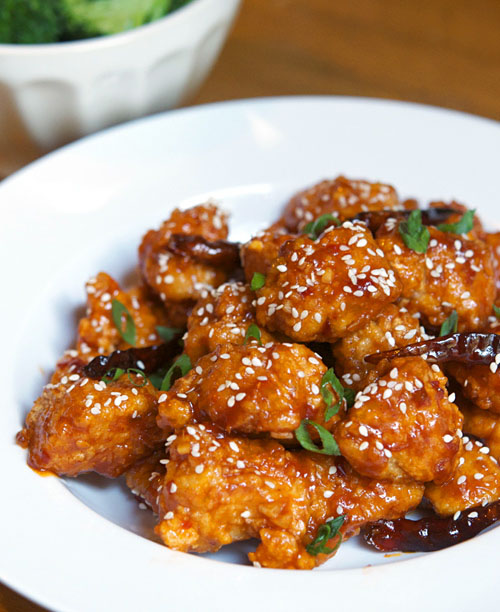

General Tso's Chicken

This popular Chinese takeout dish is just as easy to order as it is to make yourself!
The chicken is crispy and the sauce is second to none, bringing some tang and sweetness along with its deep orange color.
This recipe is extremely customizable: I often opt for some broccoli and some additional garlic.
People say that chicken and rice is boring, but that's only if you let it be!
I recommend adding this to your home menu if you're a fan of quick, delicious meals.
Serves: 4
Prep time: 20-25 minutes
Ingredients:
- 1 lb chicken thighs cut to one-inch cubes
- 1/4 cup corn starch
- 1 tbsp oil for frying
- 3 cloves garlic
- Pinch of red chili flakes
For the sauce, you'll need:
- 3 tbsps soy sauce
- 3 tbsps rice vinegar
- 1/4 cup water
- 3 tbsps sugar
- 1 tbsp corn starch
Steps:
- Toss your cubed chicken into corn starch and sed aside.
This will help get a nice crisp on the chicken.
- In a separate bowl, combine all the ingredients for the sauce.
- Preheat a pan with oil and cook the chicken on medium heat until all sides are golden brown.
Remove the chicken and leave some oil in the pan.
- Add the garlic and pepper flakes to the pan and toast them for 30 seconds.
- Add the sauce to the pan and bring to a simmer, then add the chicken back to the pan and coat.
- If you're feeling frisky, garnish with sesame seeds before serving.
This has been my favorite recipe to make recently. It's super quick and goes amazing over rice. Thanks to Natasha's Kitchen for the recipe!
Home Page